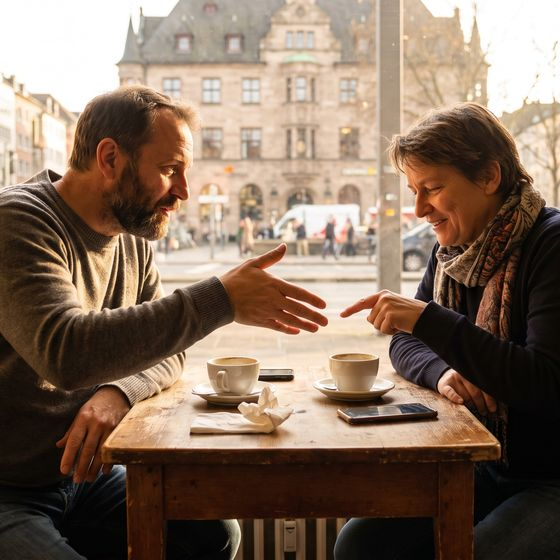

Ein Wort statt drei — und die Frage dazu. Wer die da-Wörter kann, klingt sofort flüssiger, weil er nicht mehr alles wiederholen muss.
🖼️ Einstieg🧩 Die Regel💬 10 Sätze🎚️ Sache oder Person?✅ Üben🗣️ Sprechen
Warum sagt niemand „Ich warte auf das“?
Weil Deutsch für Sachen ein eigenes Wort baut. Zwei Sätze zeigen den Unterschied besser als jede Regel.

Klingt falsch
Ich warte auf das.
So sagt es niemand. Auf eine Sache zeigt man im Deutschen nicht mit das.
So ist es richtig
Ich warte darauf.
Sache plus Präposition wird ein einziges Wort: da + r + auf.
Person
Ich warte auf sie.
Bei Menschen bleibt die Präposition, danach kommt ein Pronomen.
Sache
Ich warte darauf.
Bei Dingen wird daraus ein da-Wort. Das ist der ganze Unterschied.
💡 Die eine Frage, die alles entscheidet: Geht es um einen Menschen oder um eine Sache? Mensch → Präposition + Pronomen (auf sie, an ihn, über euch). Sache → ein da-Wort (darauf, daran, darüber). Mehr steckt nicht dahinter.
🎧 Zum Einstieg: Sag beide Sätze laut. Merkst du, wie darauf von selbst kommt, sobald du nicht an eine Person denkst? Genau dieses Gefühl bauen wir heute aus.
Drei Bausteine, fertig
Die da-Wörter sehen kompliziert aus, sind aber immer nach demselben Muster gebaut.
da + auf
wird darauf
Vor einem Vokal schiebt sich ein r dazwischen. Deshalb darauf, daran, darüber.
da + mit
wird damit
Vor einem Konsonanten bleibt es einfach: damit, davon, davor, dafür.
wo + auf
wird worauf
Dieselbe Regel für die Frage: worauf, woran, worüber — aber womit, wovon, wofür.
Person
bleibt getrennt
„Ich denke an ihn“, „Ich freue mich über sie“. Nie daran, wenn ein Mensch gemeint ist.
vor dem Nomen
nur die Präposition
„Ich interessiere mich für Geschichte.“ Das da-Wort ersetzt das Nomen, es steht nicht davor.
als Ankündigung
zeigt nach vorn
„Ich freue mich darauf, dich zu sehen.“ Das da-Wort hält den Platz für das frei, was danach kommt.
📍 Die Verben bestimmen die Präposition — und die muss man mitlernen. warten auf, denken an, sich freuen über oder auf, Angst haben vor, sprechen über, sich interessieren für, einverstanden sein mit. Lern das Verb nie ohne seine Präposition.
⚠️ Der häufigste Fehler: „Ich freue mich über es“ statt „Ich freue mich darüber“. Sobald du es, das oder dem nach einer Präposition sagen willst und keine Person meinst — bau ein da-Wort.
Zehn Sätze, die du morgen brauchst
Zu jedem Satz die Situation. Sag ihn laut und ersetze dabei in Gedanken das Nomen durch das da-Wort.
🎲 Spiel dazu: Eine Person sagt den langen Satz mit Nomen, die nächste macht daraus die kurze Fassung mit da-Wort. Wer zögert, gibt weiter.
🎚️ Sache oder Person?
Oben steht, worum es geht. Unten fehlt das Wort. Achte nur auf eines: Mensch oder Ding?
Darum geht es
Bereit?
—
0 von 0
💬 Danach im Kurs: Nennt reihum ein Verb mit Präposition und baut sofort beide Fassungen dazu — einmal mit Person, einmal mit Sache.
✅ Üben
14 Aufgaben. Nach jeder Antwort steht da, warum es so ist — lies die Erklärung, auch wenn du richtig lagst.
0 von 14
🗣️ Selbst sprechen
Acht Anlässe. Antworte jedes Mal in zwei Sätzen: erst der lange mit Nomen, dann der kurze mit da-Wort.
Warten
Worauf wartest du gerade in deinem Leben — auf einen Termin, eine Antwort, eine Entscheidung?
warten auf · sich freuen auf · rechnen mit
Erinnern
Woran erinnerst du dich, wenn du an deine Schulzeit denkst?
sich erinnern an · denken an · sprechen über
Angst
Wovor hattest du als Kind Angst — und wie ist es heute?
Angst haben vor · sich fürchten vor · lachen über
Freuen
Worauf freust du dich diese Woche am meisten?
sich freuen auf · sich freuen über · warten auf
Ärgern
Worüber hast du dich zuletzt richtig geärgert? Erzähl kurz.
sich ärgern über · sich aufregen über · reden über
Interesse
Wofür interessierst du dich, was fast niemand aus deinem Umfeld teilt?
sich interessieren für · sich beschäftigen mit
Einverstanden
Womit bist du in deinem Alltag überhaupt nicht einverstanden?
einverstanden sein mit · sich beschweren über
Streit
Jemand sagt: „Daran bist du selbst schuld.“ Wie antwortest du?
schuld sein an · sich wehren gegen · sprechen über
🔑 Redemittel: „Ich freue mich darauf.“ · „Damit bin ich einverstanden.“ · „Daran habe ich nicht gedacht.“ · „Darüber müssen wir noch sprechen.“ · „Davor habe ich Respekt.“ · „Worauf wartest du noch?“